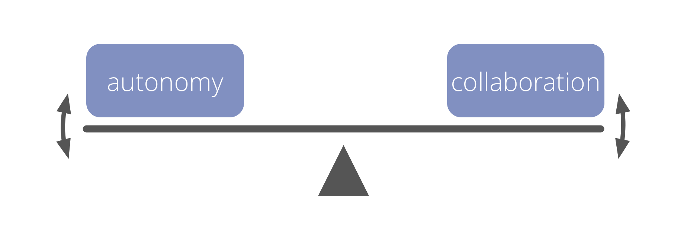

Participation élégante

Un engagement individuel pour développer des interactions utiles et une collaboration efficace :
- activement respecter les ententes et les suivres de la meilleure façon possible compte tenu des circonstances
- prendre conscience et comprendre les besoins individuels et collectifs
- développer les compétences nécessaires pour le faire
- soutenir les autres à faire de même
- si nécessaire, partager les difficultés avec le cercle
Une participation élégante peut inclure l’interruption, l’objection à ou la rupture d’ententes.
Avantages de la participation élégante

- permet la co-création et évolution des ententes
- aide à souder des équipes plus fortes
- construit l’auto-responsabilisation, l’intégrité et la confiance
- génère une culture de soutien mutuel et d’étroite collaboration
- encore plus efficace lorsque cette méthode est partagée par le groupe
Participation élégante : auto-évaluation
- Comment s’entraider dans la participation élégante?
- Lesquelles de mes interactions avec mes pairs sont inefficaces, ou inutiles ?
- Quelles sont les ententes que je peine à respecter ou à faire ma part du travail? Que puis-je faire pour changer cette situation?
- Quelles compétences pourrais-je développer qui m’aideraient à participer plus élégamment ?
- Que signifierait une participation élégante en regard de :
- mes activités quotidiennes ?
- ma collaboration et mes interactions avec les autres ?
- l’organisation ? les clients ou les bénéficiaires ?
- l’environnement en général ?